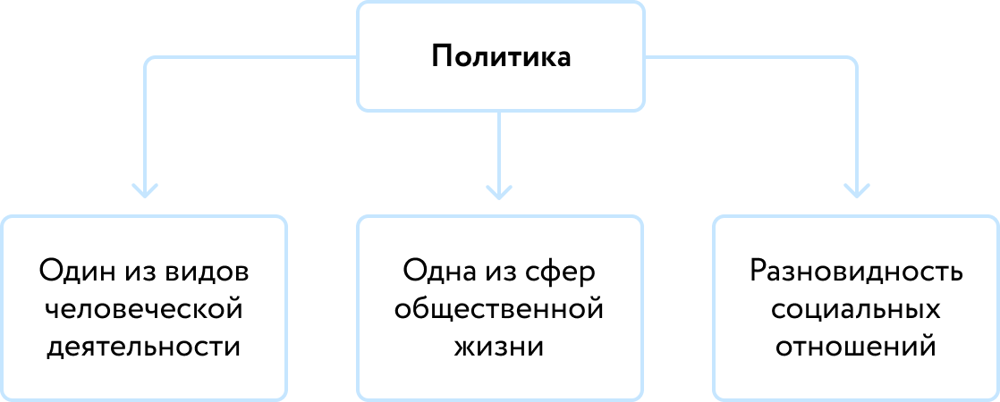
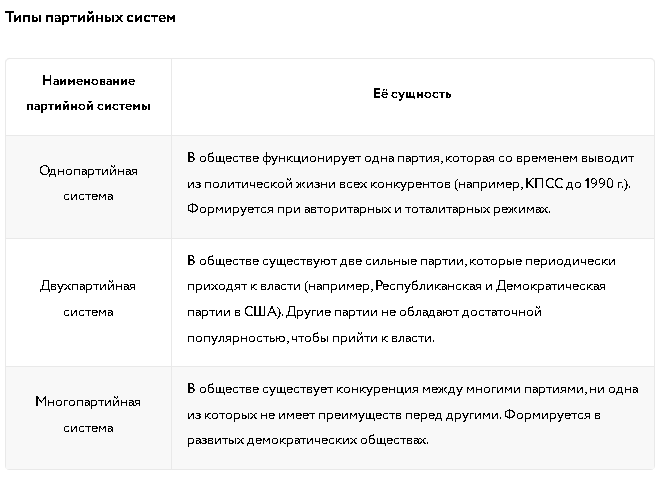

Политика — деятельность, связанная с получением, использованием и удержанием классами, партиями и другими социальными группами политической власти в целях решения вопросов общественной и государственной жизни.
К числу субъектов политики относят прежде всего большие социальные группы, включая нации, социальные слои, классы. Например, население какого-либо государства выступает субъектом политики, если прошли выборы и с их помощью сформировались органы государственной власти. В числе субъектов политики также можно называть различные организации и объединения, включая государства, политические партии.
В свою очередь, объекты политики — это различные сферы жизни общества: экономика, культура, экология, демография, международные отношения. Воздействуя на эти объекты, субъекты политики преследуют цель решить основные вопросы общественной и государственной жизни. Соответственно, политика ориентирована на достижение общественно значимых целей.
Власть — система взаимоотношений между людьми, основанная на господстве одних и подчинении других.
Ресурсы власти — источники, на которые опирается власть; средства обеспечения власти.
Деление власти:
Харизматическая власть базируется на личных качествах лидера. Лидер, как правило, проявляет себя в сложные исторические периоды и фактически ведёт народ за собой: в качестве примера можно привести правление Наполеона Бонапарта.
Традиционная власть основывается на вере, обычаях и традициях. Иными словами, в этом случае речь идёт о привычке повиноваться власти, что делает её крепкой и устойчивой. В качестве примера можно назвать абсолютную монархию.
Легальная власть в своей основе имеет закон. В этом случае речь идёт о подчинении установленным правилам несмотря на возможный внутренний протест. Пример — значительная часть современных государств.
Легитимность — добровольное признание людьми основных ценностей действующей власти.
По объёму власть традиционно подразделяют на политическую и государственную. Из всех разновидностей власти наибольшее значение для общества имеет политическая власть, поскольку она контролирует поведение граждан или общества в целом, оказывает влияние на него.
Политическая власть — публичная система взаимоотношений между людьми и политическими институтами, которая распространяется на всё общество в целом.
Политическая власть достаточно своеобразна. К числу особенностей политической власти относят следующее:
1.политическая власть существует только в обществе и связана с функционированием государства;
2.политическая власть публична, политические отношения в той или иной степени охватывают всех членов общества;
3.политическая власть направлена на достижение общезначимых целей, достичь которых без участия государства невозможно;
4.политическая власть основана на организованном законном принуждении, авторитете и праве;
5.субъекты политической власти — государство, политические партии и движения. Основная их характеристика — связь с государством и его институтами.
Государственная власть — составляющая часть политической власти, действующая на территории конкретного государства.
Основные направления политики — экономическое, социальное, культурное и государственно-правовое (собственно политическое). Они достаточно широкие, поэтому в них можно выделять более узкие направления политики. Например, в рамках социальной политики осуществляют молодёжную, пенсионную, миграционную политику.
Помимо этого, политику принято подразделять на внутреннюю и внешнюю. Внутренняя политика нацелена на решение общественно значимых вопросов внутри государства — как правило, в неё входят перечисленные выше направления. Внешняя политика нацелена на отстаивание интересов государства на международной арене. Нередко выделяют также и мировую политику, цель которой — решение международных проблем, например проблемы международного терроризма, глобальных экологических проблем.
1.обеспечивает целостное и стабильное развитие общества, исполняя волю большинства людей с учётом существования других точек зрения по какому-либо общественно значимому вопросу;
2.определяет общественно значимые цели и объединяет людей для их достижения;
3.вырабатывает и применяет социальные, в том числе правовые, нормы;
4.регулирует общественные процессы, предупреждает и разрешает социальные конфликты;
5.в определённой степени гарантирует права и свободы граждан, сохранение общественного порядка.
Политическая партия - это организованная группа единомышленников, выражающая интересы определённых социальных слоев и стремящаяся к достижению определённых политических целей (завоевание государственной власти или участие в её осуществлении).
Отличительные признаки политической партии:
1) Нацеленность на завоевание и осуществление власти.
2) Наличие политической программы, т. е. документа, в котором формулируются цели и задачи партии.
3) Наличие организации (руководящие органы, членство, устав партии).
4) Наличие разветвлённой сети местных организаций, ядро которых образуют активисты-добровольцы.
5) Носитель определённой идеологии или особого видения мира и человека.
Социал-демократические партии возникикшие в конце XIX века, стали выразителями интересов рабочего класса в рамках капиталистической системы. Их программа, как правило, включала требования социальных реформ, улучшения условий труда, расширения политических прав и участия в управлении государством. Социал-демократы стремились к постепенному реформированию капитализма, а не к его полному уничтожению, делая ставку на парламентские методы борьбы и социальное партнерство.
Коммунистические — стремятся к полному огосударствлению экономики, к распределению богатств с учётом интересов всех социальных слоев общества, к полному контролю со стороны государства над сферами образования, здравоохранения и т. д. Центральным элементом их программы была диктатура пролетариата – политическая власть рабочего класса, необходимая для подавления сопротивления буржуазии и осуществления социалистических преобразований.
Либеральные партии - стремятся к максимальной свободе личности, ограничению вмешательства государства в экономику и частную жизнь, а также к защите прав меньшинств. Они часто выступают за прогрессивное налогообложение, социальные программы поддержки наиболее уязвимых слоев населения, и за активное участие в международных организациях. В их риторике часто звучат слова "свобода", "равенство возможностей", "прогресс".
Консервативные партии - напротив, делают акцент на сохранении традиционных ценностей, поддержании порядка и стабильности, и укреплении национального суверенитета. Они, как правило, выступают за более низкие налоги, ограничение социальной помощи, и за сильную национальную оборону. В их идеологии часто встречаются понятия "традиция", "порядок", "ответственность".
Клерикальные — придерживаются религиозной идеологии.
Националистические — строят свою деятельность на основе националистических и фашистских идей.
Правящие — это те партии, которые находятся у власти.
Оппозиционные — это те партии, которые не находятся у власти и имеют главную задачу — завоевать власть. Оппозиционные партии в свою очередь могут подразделятся на легальные, полулегальные и нелегальные.
Реформистские партии — стремятся к постепенным преобразованиям общества с использованием законных средств воздействия на власть и законных средств достижения власти.
Революционные партии — стремятся к преобразованию общества с использованием средств борьбы, которые, с точки зрения существующего государственного устройства и политического режима, являются незаконными.
1) Борьба за власть в государстве и влияние на политику государства.
2) Участие в осуществлении власти.
3) Участие в формировании власти.
4) Формирование общественного мнения.
5) Выражение интересов социальных групп.
6) Политическое воспитание.
7) Подготовка кадров политиков.
Партийная система — совокупность партий, участвующих в формировании законодательных и исполнительных структур власти.
Политическое движение — добровольное формирование, возникающее в результате свободного и сознательного стремления граждан объединиться на основе общности своих интересов.
Отличительные признаки политического движения:
1) Стремится не к достижению власти, а к воздействию на власть в нужном для него направлении.
2) Имеет добровольное членство либо вообще не имеет чётких, формальных процедур, связанных с членством.
3) Не имеет строгой иерархии, т. е. четкого распределения между центром и периферией в нём не обнаруживается.
4) Ориентируется на выражение частных интересов той или иной группы людей.
5) В большей мере зависит от своего лидера, его популярности, чем от чёткости программных установок.
Конституция Российской Федерации — это основной закон России, закрепляющий основы конституционного строя, организации государственной власти и взаимоотношений между гражданином, обществом и государством.
Структура Конституции РФ: преамбула (вступительная часть) и два раздела.
Второй раздел Конституции РФ содержит заключительные и переходные положения: о введении Конституции в действие и соответственно прекращении действия прежней Конституции; о соотношении Конституции и Федеративного договора; о порядке применения законов и иных нормативных правовых актов, действовавших до вступления в силу настоящей Конституции; об основаниях, на которых продолжают действовать ранее образованные органы.
Конституционный строй РФ — это система социальных, экономических и политико-правовых отношений, устанавливаемых и охраняемых Конституцией РФ и другими конституционно-правовыми актами государства.
Избирательное право — совокупность юридических норм, регулирующих порядок выборов представительных органов и выборных должностных лиц государства, а также органов местного самоуправления.
1) Отсутствие минимального порога явки избирателей в день голосования для признания выборов состоявшимися.
2) Смешанная избирательная система при выборах депутатов в Государственную Думу (2016), мажоритарная избирательная система при выборах Президента РФ.
3) Процентный барьер для прохождения партий в Государственную Думу: 5% — барьер для формирования фракции. Партии, получившие на выборах не менее 3 % голосов, получат прямой допуск до следующих выборов в Госдуму и всех выборов в законодательные (представительные) органы государственной власти в субъектах РФ и возмещение всех расходов за прошедшие выборы и повышенное финансовое обеспечение на все время до следующих выборов. (2016).
4) Высшее должностное лицо субъекта РФ (руководитель высшего исполнительного органа государственной власти субъекта РФ) избирается гражданами РФ, проживающими на территории данного субъекта РФ и обладающими в соответствии с федеральным законом активным избирательным правом, на основе всеобщего равного и прямого избирательного права при тайном голосовании. Высшим должностным лицом субъекта РФ может быть избран гражданин РФ, достигший возраста 30 лет.
5) Депутатом представительного органа местного самоуправления может быть избран гражданин РФ, достигший 18 лет. Выборным должностным лицом местного самоуправления может быть избран гражданин РФ, достигший 21 года.
Орган государственной власти (государственный орган) - это часть государственного аппарата, наделённая государственно-властными полномочиями и осуществляющая свою компетенцию по уполномочию государства в установленном им порядке.
Федеральное Собрание - это избираемый двухпалатный парламент России, постоянно действующий представительный и законодательный орган.
Состоит из 450 депутатов, избираемых всем населением страны сроком на 5 лет. Депутатом может быть избран гражданин РФ, достигший 21 года и имеющий право участвовать в выборах, постоянно проживающий в Российской Федерации, не имеющий гражданства иностранного государства либо вида на жительство или иного документа, подтверждающего право на постоянное проживание гражданина Российской Федерации на территории иностранного государства.
Предмет ведения:
1) Обсуждение и принятие законов.
2) Обсуждение и принятие федерального бюджета.
3) Установление налогов и сборов, финансовое регулирование.
4) Ратификация международных договоров, вопросы войны и мира.
5) Вопросы статуса и защиты государственных границ.
6) Утверждение по представлению Президента Российской Федерации кандидатуры Председателя Правительства Российской Федерации, утверждение по представлению Председателя Правительства Российской Федерации кандидатур заместителей Председателя Правительства Российской Федерации и части федеральных министров.
7) Решение вопроса о доверии (недоверии) Правительству РФ.
8) Назначение на должность и освобождение от должности:
Председателя Центрального банка РФ;
Заместителя Председателя Счётной палаты и половины состава ее аудиторов (от лат. auditor — слушатель — бухгалтер-ревизор, который проверяет состояние финансово-хозяйственной деятельности организаций и предприятий);
Уполномоченного по правам человека в РФ.
9) Объявление амнистии.
10) Выдвижение обвинения против Президента РФ для отрешения его от должности, или против Президента Российской Федерации, прекратившего исполнение своих полномочий, в целях лишения его неприкосновенности.
В него входят:
по два представителя от каждого субъекта РФ: один представитель от законодательного и один — от исполнительного органа власти;
представители Российской Федерации, назначаемые Президентом Российской Федерации. Президент может назначить не более 30 сенаторов, из которых не более семи могут быть назначены пожизненно;
Президент Российской Федерации, прекративший исполнение своих полномочий в связи с истечением срока его пребывания в должности или досрочно в случае его отставки имеет право стать пожизненным сенатором.
Предмет ведения:
1) Обсуждение и принятие законов.
2) Обсуждение и принятие федерального бюджета.
3) Установление налогов и сборов, финансовое регулирование.
4) Ратификация международных договоров, вопросы войны и мира.
5) Вопросы статуса и защиты государственных границ.
6) Утверждение изменения границ между субъектами РФ.
7) Утверждение указов Президента РФ о введении военного и чрезвычайного положения.
8) Решение вопроса о возможности использовать Вооруженные силы РФ за пределами территории России.
9) Назначение выборов Президента РФ.
10) Отрешение Президента РФ от должности, лишение неприкосновенности Президента Российской Федерации, прекратившего исполнение своих полномочий.
11) Назначение на должности по представлению Президента Российской Федерации Председателя Конституционного Суда Российской Федерации, заместителя Председателя Конституционного Суда Российской Федерации и судей Конституционного Суда Российской Федерации, Председателя Верховного Суда Российской Федерации, заместителей Председателя Верховного Суда Российской Федерации и судей Верховного Суда Российской Федерации.
12) Назначение на должность и освобождение от должности:
Председателя Счётной палаты и половины состава — её аудиторов;
части членов Центральной избирательной комиссии.
13) Проведение консультаций по предложенным Президентом Российской Федерации кандидатурам на должность Генерального прокурора Российской Федерации, заместителей Генерального прокурора Российской Федерации, прокуроров субъектов Российской Федерации, прокуроров военных и других специализированных прокуратур, приравненных к прокурорам субъектов Российской Федерации.
Правительство РФ — это высший исполнительный орган, возглавляющий единую систему исполнительной власти на всей территории России.
Полномочия Правительства РФ:
Разработка и представление Федеральному Собранию федерального бюджета и обеспечение его исполнения; предоставление Государственной Думе отчёта об исполнении федерального бюджета.
Обеспечение проведения в РФ единой финансовой, кредитной и денежной политики.
Обеспечение проведения в РФ единой социально ориентированной государственной политики в области культуры, науки, образования, здравоохранения, социального обеспечения, поддержки, укрепления и защиты семьи, сохранения традиционных семейных ценностей, а также в области охраны окружающей среды.
Осуществление управления федеральной собственностью.
Осуществление мер по обеспечению обороны страны, государственной безопасности, реализации внешней политики РФ.
Осуществление мер по обеспечению законности, прав и свобод граждан по охране собственности и общественного порядка, борьбе с преступностью.
Судебная власть — обусловленный разделением властей вид государственной власти, связанный с осуществлением правосудия посредством конституционного, гражданского, арбитражного, административного и уголовного судопроизводства.
На федеральном уровне представлена двумя высшими судебными органами: Конституционным Судом РФ и Верховным Судом РФ.
Президент РФ — глава Российского государства, занимает высшее место в иерархии государственных органов, обеспечивает стабильность и преемственность механизма государственной власти, осуществляет верховное представительство РФ на международной арене.
По Конституции Президент РФ прямо не относится ни к одной из ветвей власти, обеспечивая их согласованное функционирование. Срок полномочий президента - 6 лет.
Полномочия президента РФ:
Издаёт указы и распоряжения, обязательные для исполнения на всей территории РФ. Подписывает федеральные законы.
Предоставляет гражданство РФ и политическое убежище в России. Обладает правом помилования. Награждает государственными наградами РФ, присваивает почётные звания, высшие военные и высшие специальные звания.
Назначает и освобождает полномочных представителей Президента РФ в федеральных округах. Приостанавливает действие органов исполнительной власти субъектов РФ в случае их противоречия обязательствам РФ или нарушения прав и свобод человека и гражданина.
Назначает выборы в Государственную Думу. Обладает правом законодательной инициативы. Имеет право вето. Обращается к Федеральному Собранию с ежегодными посланиями об основных направлениях внутренней и внешней политики. Распускает Государственную Думу в установленном законом порядке.
Назначает Председателя Правительства Российской Федерации, кандидатура которого утверждена Государственной Думой, и освобождает Председателя Правительства Российской Федерации от должности, принимает решение об отставке Правительства. Утверждает по предложению Председателя Правительства Российской Федерации структуру федеральных органов исполнительной власти, вносит в неё изменения. Осуществляет общее руководство Правительством Российской Федерации.
Выдвигает кандидатуры на должности судей Конституционного и Верховного Судов РФ. Назначает судей других федеральных судов. Назначает на должность Генерального прокурора РФ.
Является Верховным главнокомандующим Вооруженными силами РФ. Утверждает военную доктрину. Вводит в случае необходимости на территории РФ или отдельных её местностей военное или чрезвычайное положение.
Ведёт переговоры и подписывает международные договоры. Назначает и отзывает послов и других дипломатических представителей в иностранных государствах и международных организациях.
Социальная мобильность — перемещение групп или индивидов в социальной структуре общества, изменение их статуса.
Каналы социальной мобильности:
1) социальный статус семьи;
2) физические и умственные способности;
3) получение образования;
4) военная служба;
5) вступление в брак;
6) смена места жительства;
7) гражданская война;
8) иностранная интервенция;
9) военный переворот.
Социальный лифт — социальный механизм, благодаря которому человек может изменить свой социальный статус.
Основные каналы социальной мобильности
армия,
семья,
церковь.
Социализация — это процесс, в ходе которого индивид, усваивая социальные нормы и овладевая социальными ролями, становится личностью.
Личность — это индивид со сформированными у него в процессе социализации социально значимыми качествами.
Первичная социализация охватывает ранний период жизни индивида и осуществляется в основном в семье. Именно здесь ребенок усваивает базовые ценности, нормы морали и поведения, формирует представления о мире и о себе. Семья является первым и важнейшим агентом социализации, поскольку именно родители или лица, их заменяющие, оказывают наибольшее влияние на формирование личности ребенка. Важную роль в первичной социализации также играют ближайшие родственники и друзья семьи.
Вторичная социализация начинается с поступлением ребенка в школу и продолжается в течение всей его жизни. На этом этапе индивид усваивает социальные роли и нормы, необходимые для функционирования в более широком социальном контексте. Агентами вторичной социализации выступают образовательные учреждения, трудовые коллективы, политические организации, средства массовой информации и другие социальные институты. В ходе вторичной социализации индивид приобретает профессиональные навыки, осваивает различные социальные роли и адаптируется к изменяющимся социальным условиям.